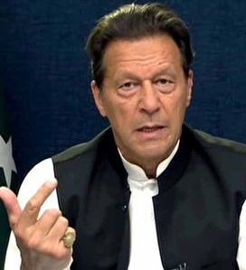

Oleksiy Danilov interview: Ukraine counter-offensive 'ready to begin'
Ukraine is ready to launch its long-expected counter-offensive against Russian forces, one of the country's most senior security officials has told the BBC.He warned that Ukraine's government had "no right to make a mistake" on the decision because this was an "historic opportunity" that "we cannot lose".
As secretary of the National Security and Defence Council of Ukraine, Mr Danilov is at the heart of President Volodymyr Zelensky's de facto war cabinet.
His rare interview with the BBC was interrupted by a phone message from President Zelensky summoning him to a meeting to discuss the counter-offensive.

The end of the affair: How Imran Khan went from the Pakistan Armys saviour to its nemesis
As Imran Khan and his party face a country-wide crackdown, Pakistan seems to have come to a standstill.
The nation is facing crippling inflation and the hottest summer in history, with constant power breakdowns, and yet the whole country is consumed with what Khan will do next, and what our military establishment can do to contain him.
After he was removed from power more than a year ago, his supporters said Khan was their "red line" and that if he was arrested, the country would burn. After a number of failed attempts, a contingent of paramilitary forces did just that on 9 May.
The country didn't quite burn, but Khan's supporters took the fight to military cantonments.

Lionel Messi: Destiny - new documentary goes inside Argentina's World Cup win
Argentina went into the tournament as one of the favourites, and on the back of a 36-game unbeaten run.
But their confidence was rocked as they lost their opening Group C game 2-1 to Saudi Arabia in one of the biggest World Cup shocks of all time.
"It was the hardest night of my life - I couldn't sleep," recalls goalkeeper Martinez. "I was afraid of getting knocked out of my first World Cup."
The Aston Villa player, 30, compares the game to a boxing match in which one person gets knocked out. "We couldn't fight back," he says.
Mac Allister played 'like he was in his back garden'
Brighton midfielder Mac Allister was one of the surprise stars in Qatar - and topped the BBC Sport player rater as Argentina beat France on penalties in the final.
The 24-year-old flourished alongside Messi, Enzo Fernandez and Angel di Maria.